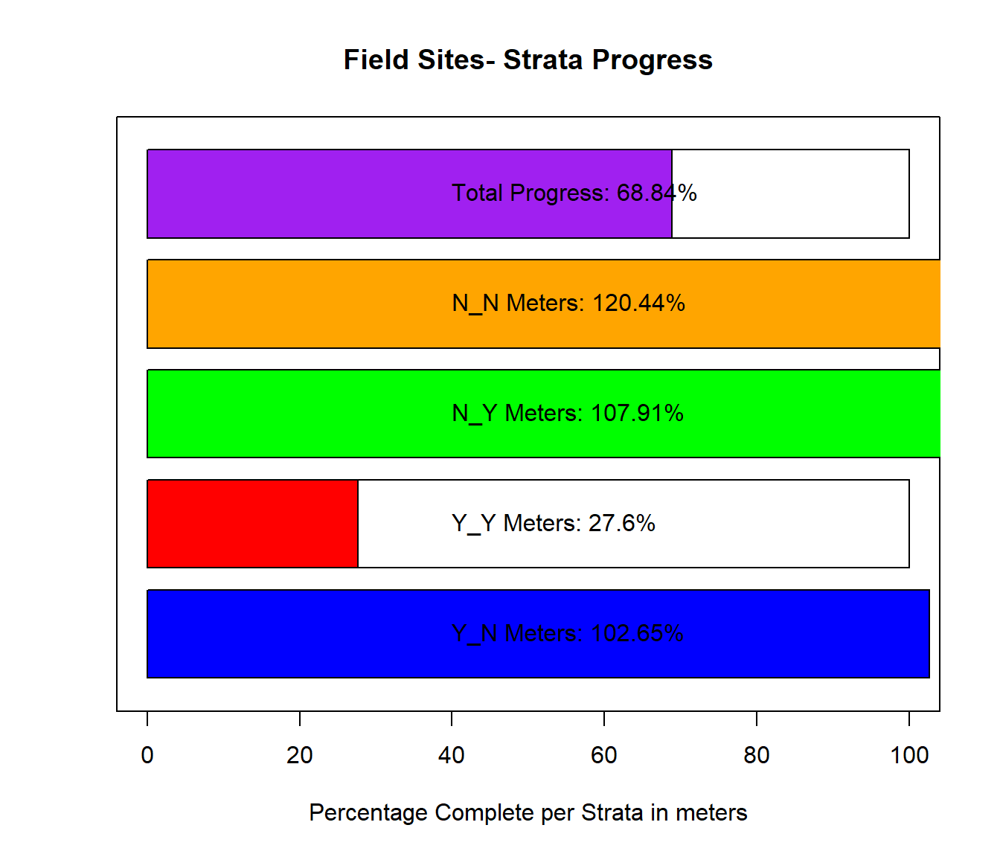
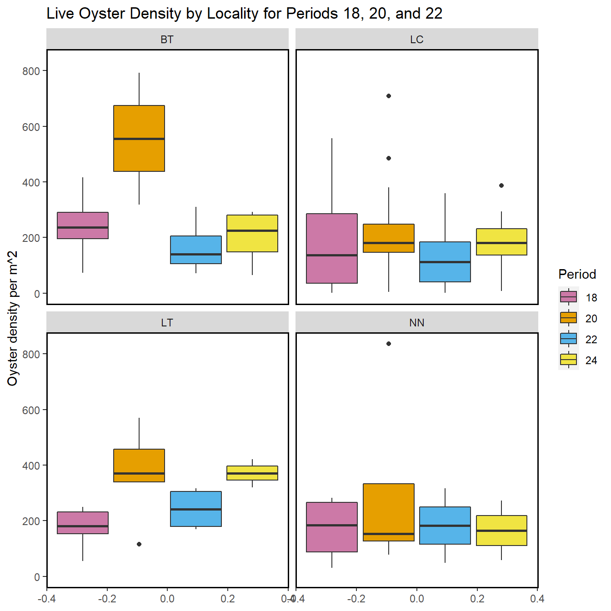

Chapter 4 Transect Report
4.1 Overview
This report provides summary statistics and figures for ongoing transect sampling. The first section of the report focuses on the current sampling (Winter 2020-2021) and how the collected data compare to last year’s sampling (Winter 2019-2020). So far 25 days have been sampled this season. The second half of the report gives summaries of all of the data that have been collected since the beginning of the project (2010-05-27). In total, 118 days have been sampled over this entire project.
4.1.1 Definition of Localities and Strata
| LOCALITY | LOCATION |
|---|---|
| BT | Big Trout |
| CK | Cedar Key |
| CR | Corrigan’s Reef |
| HB | Horseshoe Beach |
| LC | Lone Cabbage |
| LT | Little Trout |
| NN | No Name |
| STRATA | DEFINITION |
|---|---|
| Y_N | Yes Harvest, No Rock |
| Y_Y | Yes Harvest, Yes Rock |
| N_N | No Harvest, No Rock |
| N_Y | No Harvest, Yes Rock |
| N_PILOT | No Harvest, Pilot Rocks |
4.2 Current Sampling (progress)
Here, we provide a progress bar showing how much of the sampling has been completed for this season, plus summary tables and plots comparing live counts and density of oysters between this current season and last year. The current sampling period is period 22, and last year’s sampling period is period 20.

| STRATA | Meters Completed |
|---|---|
| Y_N | 424 |
| Y_Y | 1138.3 |
| N_N | 543 |
| N_Y | 1183 |
Table 4-1. - Displaying the total meters surveyed during period 22 per strata.
4.2.1 Summary Plots for Periods 18, 20 and 22

Figure 4-1.- Calculated live oyster density by locality for periods 18 (Winter 2018-2019), 20 (Winter 2019-2020) and 22 (Winter 2020-2021) with the last sample date of period 22 as 2021-02-26.
Figure 4-2.- Calculated dead oyster density by locality for periods 18 (Winter 2018-2019), 20 (Winter 2019-2020) and 22 (Winter 2020-2021) with the last sample date of period 22 as 2021-02-26.
Figure 4-3.- Calculated live oyster density by strata for periods 18 (Winter 2018-2019), 20 (Winter 2019-2020) and 22 (Winter 2020-2021) with the last sample date of period 22 as 2021-02-26.
Figure 4-4.- Calculated dead oyster density by strata for periods 18 (Winter 2018-2019), 20 (Winter 2019-2020) and 22 (Winter 2020-2021) with the last sample date of period 22 as 2021-02-26.
The following summary plot is calculated in R using the geom_density (https://ggplot2.tidyverse.org/reference/geom_density.html) statistical function in ggplot. The geom_density function computes and draws kernel density estimates, which is then represented as a smoothed version of a histogram.
Figure 4-5.- Calculated live oyster density by periods 18 (Winter 2018-2019) and 20 (Winter 2019-2020) using a probability density function with the last sample date of period 22 as 2021-02-26.
Figure 4-6.- Calculated dead oyster density by periods 18 (Winter 2018-2019) and 20 (Winter 2019-2020) using a probability density function with the last sample date of period 22 as 2021-02-26.

Figure 4-7.- Calculated live oyster density by periods 20 (Winter 2019-2020) and 22 (Winter 2020-2021) using a probability density function with the last sample date of period 22 as 2021-02-26.
Figure 4-8.- Calculated dead oyster density by periods 20 (Winter 2019-2020) and 22 (Winter 2020-2021) using a probability density function with the last sample date of period 22 as 2021-02-26.

Figure 4-9.- Live and dead oyster count comparison by periods 18 (Winter 2018- 2019), 20 (Winter 2019-2020) and 22 (Winter 2020-2021), last sample date of period 22 as 2021-02-26.
Figure 4-10.- Live and dead oyster comparison for all periods, last sample date of period 22 is 2021-02-26.